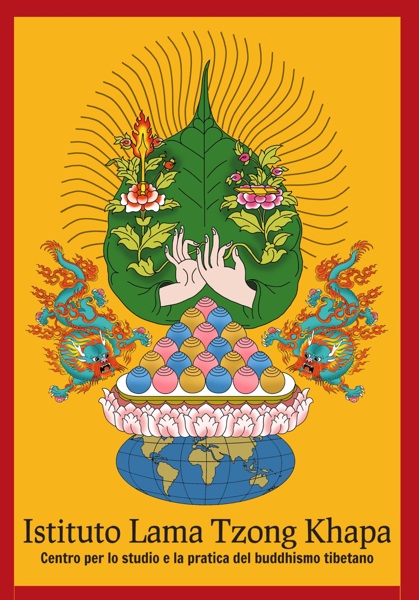

V edizione 2026/2027 · 25 posti · domande entro il 15 gennaio 2027
Una formazione teorica ed esperienziale per integrare pratiche contemplative, psicologia e competenze relazionali nelle professioni di aiuto.
Università di Firenze + ILTK Febbraio–aprile 2027 25 posti
Il Corso propone un modello della mente e del funzionamento emotivo che ha origine nella tradizione della psicologia buddhista e offre strumenti metodologici e operativi per la pratica professionale e clinica dello psicologo e dell’operatore sanitario.
L’integrazione tra esperienze contemplative e clinica orientata alla Mindfulness sostiene una comprensione più profonda degli stati emotivi e delle modificazioni della coscienza che si manifestano sia nell’operatore sia nell’utente.
6 incontri complessivi
3 fine settimana residenziali a Pomaia
25 posti disponibili
Psicologia buddhista, Mindfulness, processi emotivi e modelli psicologici contemporanei.
Meditazioni guidate, esercizi contemplativi e lavoro diretto sulla consapevolezza.
Discussioni di gruppo e strumenti per una presenza empatica, equilibrata ed efficace.
Il corso è rivolto a persone interessate a migliorare le proprie competenze nell’ambito delle relazioni di aiuto e delle capacità empatiche. La conoscenza dei processi emotivi e della metodologia di gestione delle emozioni viene sviluppata in funzione delle capacità relazionali individuali.

Le domande sono accettate in ordine cronologico fino a esaurimento dei 25 posti disponibili. Scadenza indicata: 15 gennaio 2027.